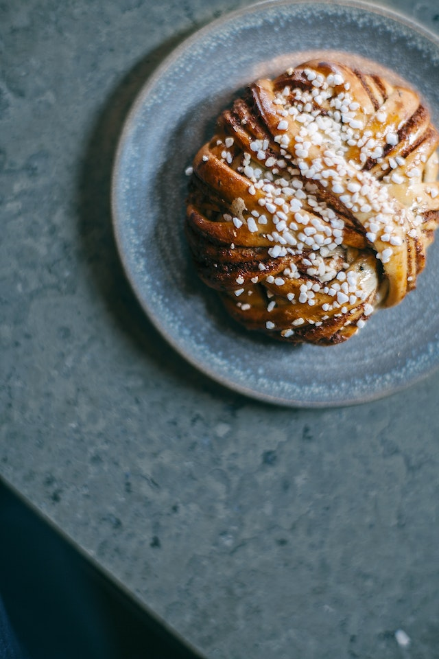

Swedish Cinnamon Rolls

Description
The following recipe contains a list of ingredients needed and step-by-step instructions to make the perfect traditional swedish cinnamon rolls, also knowns as kanelbullar. The measurements below are intended for 25 rolls.
Ingredients
Bread dough
- 35 g (1¼ oz) yeast
- 100 g (3½ oz) sugar
- 300 ml (1½ cup) milk
- 1 egg
- 120 g (4 oz) butter
- 1 tsp salt
- 1 tbs ground cardamom
- 750 g (26 oz) flour
Filling
- 100 g (4 oz) butter
- 50 g (2 oz) sugar
- 2 tbs cinnamon
Glaze
- 1 egg
- 2 tbs water
- pearl sugar
Steps
- First Step: Crumble the yeast in a bowl and stir in a few tablespoons of milk. Melt the butter and pour the milk on it. Add the rest of the ingredients and knead the dough in a dough mixer for 10–15 minutes. Let the dough rise while covered at room temperature for 30 minutes.
- Second Step: Roll out the dough so it is about 3 mm (1/8 in) thick and 30 cm (12 in) wide. Spread the room-temperature butter on top. Make a mixture of sugar and cinnamon and sprinkle it over the dough. Roll the dough the long way and cut the roll into about 25 slices. Place them with the cut edge upward in paper molds. Place on a baking sheet and let rise under a towel for about 60 minutes or until the buns have doubled in size.
- Third Step: Beat together the egg and water, brush the mixture carefully on the buns and sprinkle pearl sugar on top. Bake in the oven (220°C/425°F) for 5–6 minutes. Allow to cool on a rack.